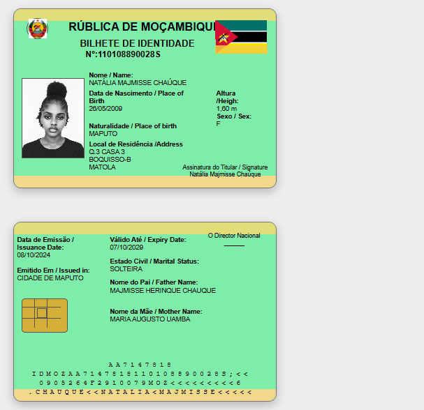
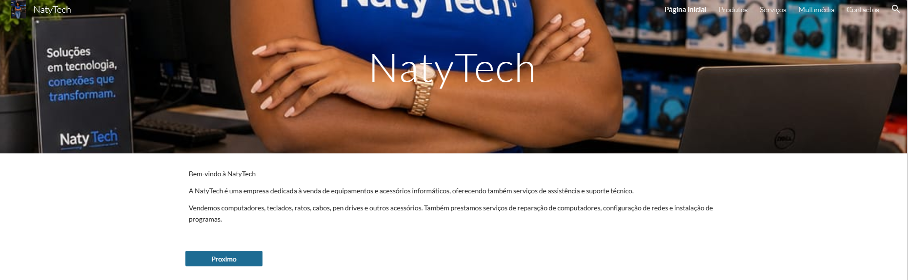
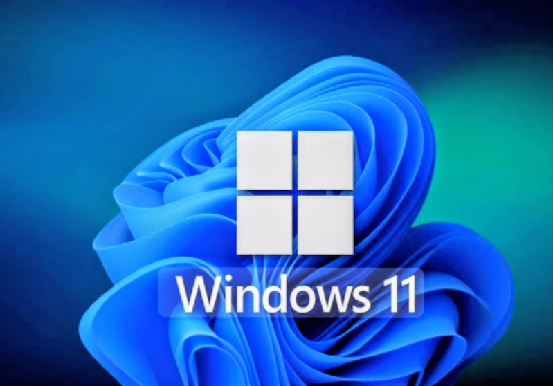

Meus Projetos
Durante a minha formação em Técnico de Suporte Informático, desenvolvi diferentes projetos que me permitiram aplicar conhecimentos de informática, desenvolvimento web, segurança de computadores e utilização de ferramentas digitais.

BI-Natália
Projeto desenvolvido com HTML e CSS para criar uma página web organizada, apresentando informações de forma simples e visualmente agradável.
Ver Projeto
NatyTech
Projeto desenvolvido no Google Sites para apresentar produtos, serviços, conteúdos multimédia e informações relacionadas com a área de informática.
Visitar SiteTrabalho em PowerPoint
Apresentação desenvolvida durante a formação, utilizando o PowerPoint para organizar e apresentar informações de forma clara e visual.
Ver Apresentação
Instalação de Sistema Operativo
Trabalho prático relacionado com a instalação e configuração de sistemas operativos, incluindo os principais procedimentos necessários para preparar um computador.